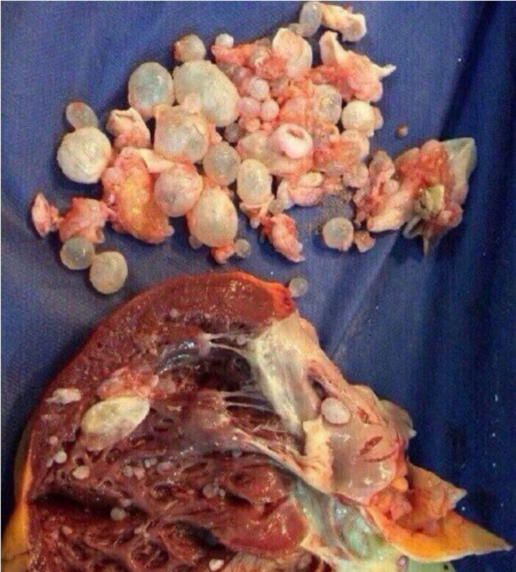

Брадавиците са резултат от наличието на
паразити в тялото ви!
Ако имате брадавици по шията, подмишниците
и други места, това означава че паразитите "Ви изяждат отвътре!""
Новини от медицината
Ако по човешкото тяло има брадавици, това значи, че колония от
смъртоносни паразити вече се е настанила във вътрешните органи и
разрушава тъканите.
Според статистиката повече от милиард души страдат от паразитни
инфекции. Най-точният начин за диагностициране на тази инфекция е
появата на брадавици.
Днес Симеон Димов отговаря на нашите
въпроси. Той е роден в Германия и практикува медицина в Европа.
От доста време прави изследвания в родината на родителите си
България. Той я смята за свой дом, а хората за свой народ,
затова иска да помогне.
Той е професор по медицински науки в катедрата
по паразитология, както и професор по естетична медицина. Автор е на
две книги по естетична медицина.
Институтът по медицинска паразитология и
хелминтология откри истинската причина за брадавици по човешкото
тяло: паразитна инфекция. Последните проучвания показват, че
остатъците от паразити са токсични и осигуряват идеална среда за
растеж на бактериите. Затова хората, заразени с паразити могат да
забележат брадавици по кожата си.
Днес ще обсъдим този медицински проблем със
Симеон Димов.
Ще започнем с основния въпрос: Вярно ли е,
че по-голямата част от населението в България е заразено с
паразити?
Д-р Димов: Димов: За съжаление, да.
Според степента на заразяване с паразити, България заема едно от
първите места. Причината е много лоша екологична обстановка,
неотзивчивост на властите и безразличие на хората. Всяка година
милиони хора умират от болести, причинени от паразити. Има много
малко изключения и обикновено става дума за ситуации, в които
инфекцията не може да бъде игнорирана, например когато сърцето е
задръстено от паразити. Напълно неизгодно е местните медицински
власти да признаят че такива инфекции са доста високи и 89% от
всички смъртни случаи са причинени от паразити. На всичкото отгоре
тези заболявания принуждават хората да купуват скъпи лекарства. Това
е огромен пазар. Надявам се, че разбирате какво точно имам предвид.
Наистина ли брадавиците са признак на
заразяване с паразити?
Д-р Димов: Димов: Да. Многобройни
проучвания потвърждават, че отпадните продукти на паразитите водят
до появата на брадавици по човешката кожа. Освен това, ако
забележите брадавици по кожата си, това означава, че паразитите са
вече в тялото ви и снасят яйца активно. Поради тази причина всеки
човек, който има брадавици по кожата си, е застрашен от смърт.
Припомням, че около 89% от всички смъртни
случаи, включително тези от така наречените естествени причини, са
причинени само от един фактор – паразити, които бавно ни изяждат
отвътре.
И така, обикновените червеи са причината
за брадавици по кожата? Как могат да бъдат причина за
смъртта?
Д-р Димов: Димов: Погрешно е да се
мисли, че паразитите са просто червеи. Има много видове паразити,
които живеят в нашите органи и могат да причинят различни
последствия. Освен това червеите, или както се наричат по друг
начин – хелминти, са доста опасни. Те буквално разрушават червата,
което води до разпадане на органа и след това смърт. Освен това, те
са трудни за разпознаване и също толкова трудни за отърваване.
В допълнение към хелминтите има хиляди
паразити, които могат да живеят в черния дроб, мозъка, белите
дробове, кръвта и стомаха. И почти всички от тях са смъртоносни.
Някои от тях веднага започват агресивно да разрушават човешкото
тяло. Други паразити не действат, докато броят им не стане толкова
голям, че тялото не може да се справи с тях и човекът умира. Те
причиняват редица смъртоносни усложнения: инфаркт, рак, чернодробна
цироза, нефрит и бъбречна недостатъчност.
В същото време мога да кажа със сигурност, че
почти всички хора са заразени с паразити. Проблемът в повечето
случаи е, че паразитните инфекции са много трудни за откриване. И
когато последиците от заразяването с паразити станат очевидни,
лекарите се опитват да се отърват от тях. При аутопсията е
необходимо и специално изследване за откриване на паразити. Поне в
повечето случаи.
Единственият универсален симптом, който ви
позволява точно да диагностицирате наличието на паразити в човешкото
тяло, са брадавиците.
Можете ли да дадете конкретни примери за
паразитни инвазии?
Д-р Димов: Мога да ви покажа хиляди
случаи. Но мисля, че ще се съсредоточа върху тези, които най-добре
показват опасностите от заразяване с паразити.
1. Случай с успешен изход – изследванията
показаха, че цялото му черво е запушено с глисти. Там те са си
изкопали лабиринт и е започнал процес на дегенерация на тъканите и
пациентът беше на ръба на сепсис. Отстранихме част от червата по
време на операцията, така червеите се отстраниха заедно с
разлагащата се тъкан. След една седмица интензивна терапия пациентът
беше значително по-добре.
2. Матка, заразена с колония от паразити - За
съжаление, не беше възможно да се отървем от тях, тъй като
паразитите и техните ларви изцяло бяха заразили матката на тази
пациентка и я увеличиха. Затова тя беше отстранена и жената беше
спасена. Интоксикацията на тялото обаче беше толкова силна, че след
отстраняване на матката тя беше подложена на специално лечение през
което трябваше да премине и за съжаление почина три години по-късно.
3. Ехинококоза на сърцето - Заболяването е
открито твърде късно. „Докторът просто повярва, че този пациент
страда от коронарна артериална болест и стенокардия, но реалната
ситуацията се оказа по-жестока. Операцията не помогна, както и
консервативното лечение или сърдечната трансплантация. В резултат на
това пациентът почина.

Как да проверим дали сме заразени с
паразити?
Д-р Димов: За съжаление, няма
методи, които могат да се използват, за да бъде напълно
диагностицирано наличието на паразити в човешкото тяло. Това
отчасти е така, защото има много видове паразити, повече от 2000
известни вида и защото са трудни за откриване. Може да се
извърши само пълна проверка, която може да бъде направена в
няколко клиники в Германия, но е много скъпо.
Основните симптоми, които показват
наличието на паразити в тялото са:
- Брадавици;
- Лош дъх;
- Алергии (обрив, сълзене на очите и хрема);
-Чести настинки;
- Хронична умора;
- Чести главоболия;
- Запек или диария;
- Болки в мускулите и ставите
- Нервност, безсъние и намален апетит
- Тъмни кръгове под очите
Ако имате някой от тези симптоми, има
99% вероятност да имате паразити в тялото си. И трябва да се
отървете от тях възможно най-скоро!
Как да се предпазим и да се отървем от
паразити?
Д-р Димов: Що се отнася до
наличието на препарати за борба с паразитите, сегашното
положението е доста проблемно. Разбира се, има
високоспециализирани лекарства, от които тялото се чисти от
червеите. Има и лекарства, които са по- малко или по-ефективни
срещу някои видове червеи или паразити, които засягат черния
дроб. Основният проблем обаче е, че те действат само на
определени видове паразити, като всеки човек носи поне 7-8 вида
паразити.
Днес има само едно решение, за да се
отървете напълно от паразитите. Това е антипаразитна хранителна
добавка, наречена
чай . Клиничните
проучвания показват отлични резултати. Износът на този продукт е
спрян, докато се разпространи в цяла България и на Балканите.
Журналист: Какво прави толкова специален?
Каква е разликата между този препарат и други антипаразитни
средства?
Д-р Димов: Димов: В сравнение с
други антипаразитни лекарства, той действа директно върху
широк спектър от паразити, които могат да заразят цялото
тяло. Предвид проблемите с диагнозата, заслужава да се
отбележи, че това лекарство позволява ефективно почистване
на цялото тяло. Вече споменах, че е почти невъзможно да се
определи кой вид паразит е заразил организма. унищожава и премахва
всички паразити, които живеят във всеки вътрешен орган - от
мозъка и сърцето до черния дроб и червата. Никое друго
лекарство не може да направи това в момента.
Освен това не е химически агент, а напълно
естествен продукт, който елиминира риска от алергични реакции,
нарушаване на бактериалната флора в червата и други проблеми,
които могат да възникнат при класическите таблетки. Ето защо е
толкова популярен сред международните аптеки и фармацевтични
компании.
ВАЖНО! Производителят
стартира специална кампания, в която това лекарство може да бъде
закупено с 50% отстъпка!
Това е ограничена оферта.
Оригиналният
чай може да поръчате на ОФИЦИАЛНАТА
СТРАНИЦА С 50% ОТСТЪПКА!
1. Ефективността на се изчислява чрез
стандартни техники. Броят на напълно възстановените лица
спрямо общия брой хора в групата от 100 души, приемащи това
лекарство:
- Елиминиране на паразити и техните ларви - 99%;
- Нормализиране на състоянието и функцията панкреаса
- 80%;
- Облекчаване на алергичния дерматит - 90%;
- Облекчаване на гастрит, язва и диария - 90%;
- Елиминиране на анемия - 99%;
- Елиминиране на брадавици и израстъци - 99%.
2. Все още не са установени странични
ефекти, включително и алергични реакции.
3. се счита за най-ефективното средство
за борба с паразитите.
Лекарството е сертифицирано не само в
България, но и в Университета по паразитология в Париж.
Клиничните проучвания потвърдиха напълно данните, получени от
България. Французите имат още по-висок процент излекувани
пациенти.
Поредица от клинични изпитвания в Китай,
Япония и Виетнам са почти завършени. Азиатските страни показват
голям интерес към този препарат. Всички тестове без изключение
показаха невероятната ефективност на този продукт.
Мисля, че нашите читатели биха искали
да знаят къде да купят чай на промоция.
Д-р Димов: Това е ограничена
оферта. А самият продукт се предлага само в определени региони
на страната. Както споменахме по-горе, в момента се продава с
цели 50% отстъпка.
Um
За да закупите , всичко, което трябва да
направите, е да направите заявка на страницата, да посочите
вашето име и телефонен номер, чрез който операторът може да се
свърже с Вас. Ако все още виждате, че има възможност за
изпращане на заявка за обратна връзка, това означава, че
лекарството все още е налично на склад. Аз лично гарантирам, че
всеки, който е информиран в сайта, може да направи поръчка.
Бихте ли искали да кажете нещо друго на
нашите читатели, преди да завършим това интервю?
Д-р Димов: Димов: Искам само да
кажа, че трябва да се грижите за здравето си. Може дори да не
сте наясно, че паразитите живеят във вас. Те могат да бъдат
навсякъде – в кръвта, червата, белите дробове, сърцето, мозъка.
Паразитите буквално ви поглъщат отвътре и тровят тялото ви. Това
създава много проблеми, които съкращават продължителността на
живота с 15-25 години. Дори няма да споменавам внезапната смърт,
която обикновено настъпва като следствие от действието на
паразитите в организма. Не чакайте, докато стане твърде късно.
Почистете тялото си сега.
Важно! Доказано е, че сега е
най-доброто време за започване на лечението. Ефектът на
лекарството се засилва. Подобряване на здравето е с 47%
по-бързо, отколкото през друго време на годината.
Вече опитах този
продукт. Имах много брадавици по врата и подмишниците. След
пет дни видях, че стават все по-малко и по-малко. Стомахът
ми започна да работи по-добре.
Имах много
образувания в областта на гърдите. Започнах да използвам чай
и не можете да си
представите резултатите. Никога не съм предполагал, че
толкова много същества могат да живеят в стомаха ми. Не
искам да си спомням повече за това.
Представете си
намерих червеи в бебешкия стол. Бях шокирана. И моят приятел
имаше този проблем наскоро и ми го препоръча. Веднага
поръчах от официалния сайт. Много мъртви червеи излязоха от
бебето ми! След приключване на курса отидохме при лекаря и
той потвърди, че става въпрос за чревни глисти. Този продукт
прави чудеса.
Благодаря много!
Когато за първи път започнах да използвам този продукт,
нямах представа, че мога да постигна такъв ефект. Болката в
стомаха ми изчезна. Нещо сякаш живееше в мен. И заедно с
болката изчезнаха и апнеята и брадавиците. И сега, на 53 г.
се чувствам по-здрав, отколкото когато бях на 30. Благодаря
ви, че казахте на хората за този проблем. Вашият лекар със
сигурност няма да ви даде толкова важна информация.
Вече опитах този
чай. Ефектът е невероятен. Чувствам се млад и здрав. Осем
месеца след приема на тази добавка имунната ми система стана
много по-силна. Можех само да мечтая за такива резултати.
Препоръчвам!
Наскоро гледах
документален филм за паразитите. И това лекарство е
споменато там. Казаха, че това е най-добрият продукт в
борбата с паразитите по света.
Баба ми ме
научи как да се отървавам от паразитите с пелин.
Цялото ми семейство пие пелин и той действа!
Червеите буквално излизат от децата. Но... Не помага
при брадавици. Поръчах чай и вече нямам
проблеми с брадавиците! Спряхме да пием пелин и
преминахме към този продукт. Ефектът е същият,
цената е много ниска, а приложението е много
по-лесно. И сега дори има отстъпка.
Съгласен съм с всички коментари. Когато
започнах да го приемам, от мен изпълзяха
отвратителни червеи. Изпаднах в паника и
отидох на лекар. Той провери и каза, че
имам метили в черния дроб. И ако не бях
разбрал, щяха да ме убият след 2-3
години.
Йована, прочете ли тази статия? За каква
измама може да говорим, ако плащането е
извършено след получаване? Поръчах,
куриерът достави. Проверих всичко и след
това платих. Сега всичко се продава в
интернет, от дрехи и обувки до различни
домакински уреди и мебели.


Коментари